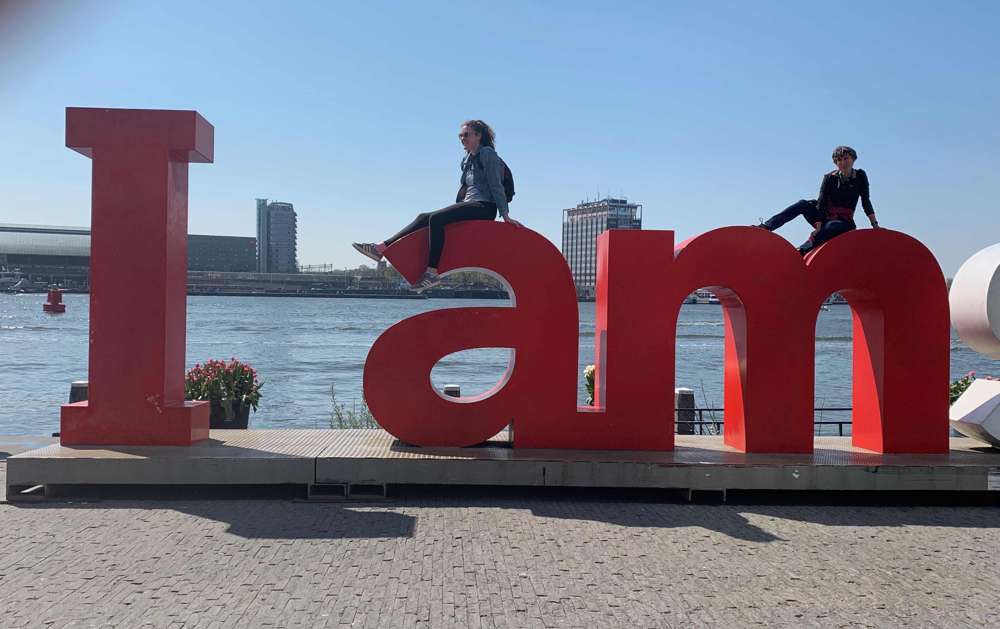
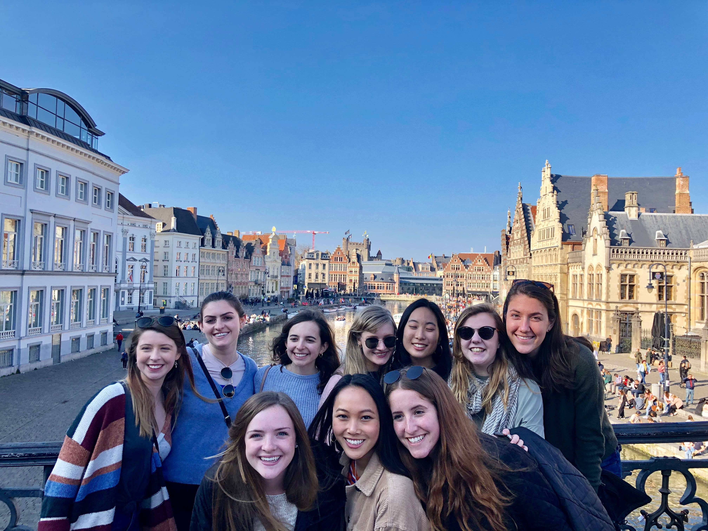
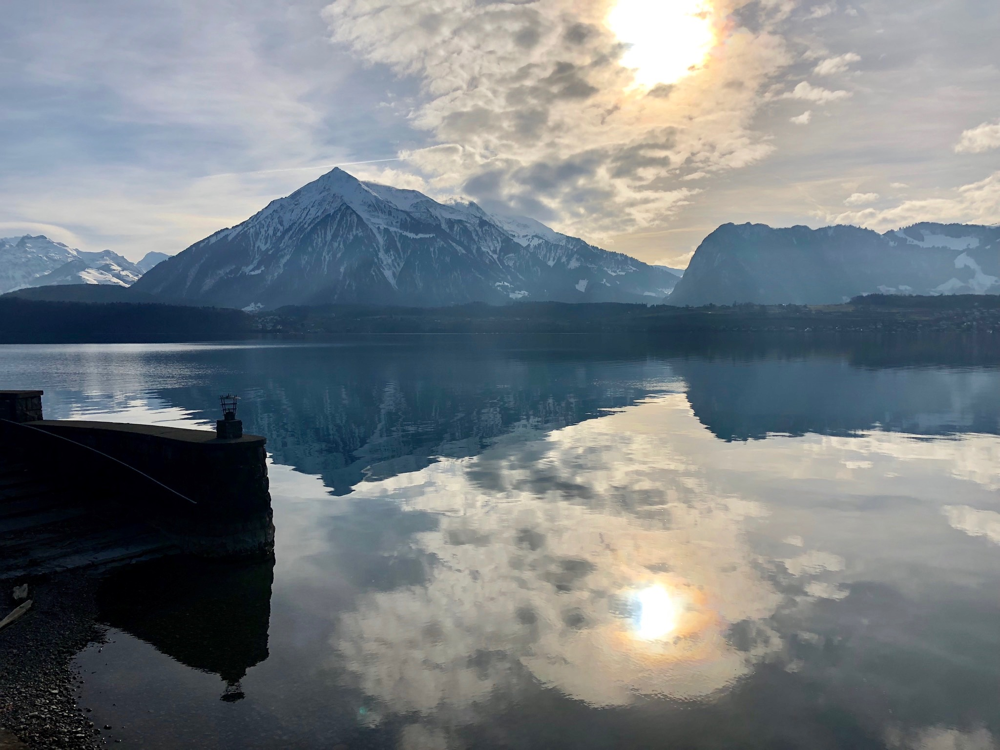
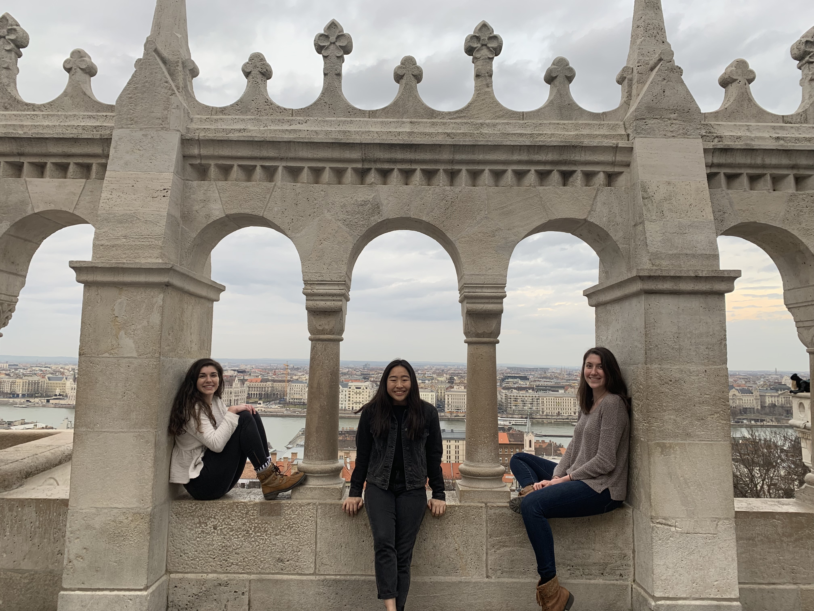
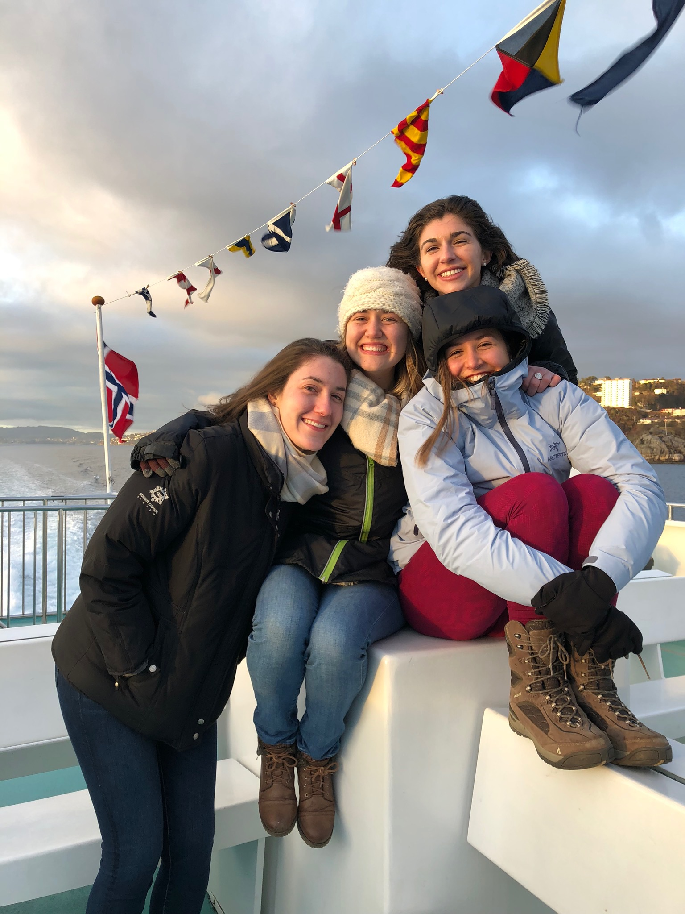

Amsterdam, Netherlands
My family was able to come visit me in Denmark for a few days, and we decided to travel to the Netherlands together. We saw incredible tulip fields in Amsterdam, visited a Dutch windmill village, and took a leisurely canal tour. In this photo, my little sister is on top of the iconic I Amsterdam statue.
Ghent, Belgium
My core class and I took our week-long study tour to Belgium, where we had a backstage tour of the EU Parliament in Brussels. In this picture, we had taken a day trip to Ghent, where we went on a beer tour throughout the city and learned about how Ghent is a “Smart City” based on its environmental and social practices.
Interlaken, Switzerland
Interlaken had some of the most pristine lakes I have ever seen. While I was the only one who went paragliding off the snowy mountains, all three of the girls I travelled with agreed to go night sledding, which was much more terrifying. In the pitch dark, we had only plastic toboggans to get us down the mountain, and hope that we didn’t fall off a cliff.
Budapest, Hungary
Three of my closest friends and I decided to go on a long trip to Budapest, Austria, and Salzburg for our Spring Break. This picture was at the Fisherman’s Bastion in Budapest, which overlooks the Danube river. The architecture was intricate and extensive, and the structures were propped up on a hill that had spectacular views, especially at night.
Bergen, Norway
Six of my roommates from Copenhagen decided to do an outdoorsy trip to Bergen, Norway. While the morning was really foggy, the sun finally peeked out in the afternoon during our cruise through the Norwegian Fjords, giving us spectacular up-close views of the stunning cliffs and waterfalls.
